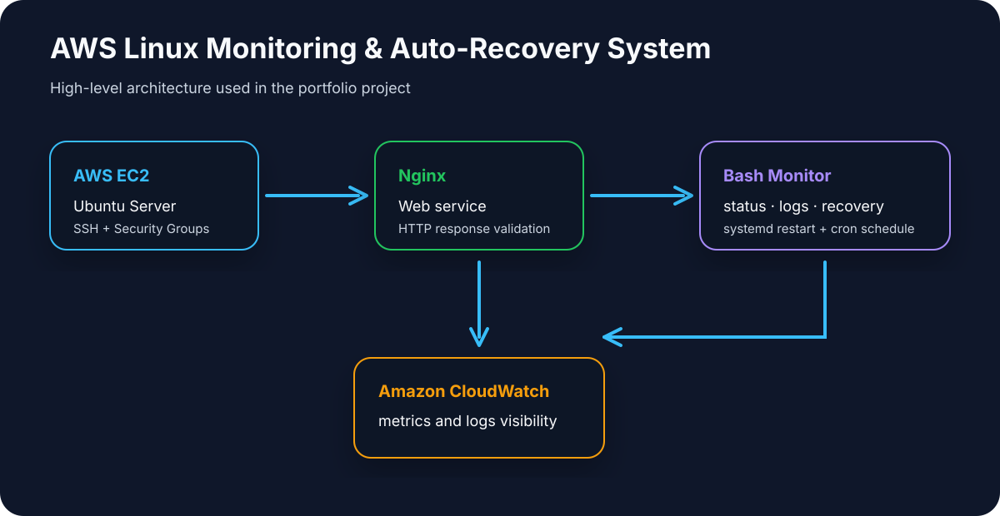

Systems
- Linux administration: users, permissions, services and logs
- Linux Server and Windows Server
- Active Directory
- Troubleshooting
Open to Linux · Cloud Operations · Junior DevOps roles
I build and document Linux, monitoring and cloud-oriented projects focused on automation, service reliability and systems operations.
About me
Systems Engineer with experience in enterprise banking environments, specialized in monitoring, automation and systems operations. Experienced in designing Splunk dashboards, creating alerts, tracking KPIs, managing incidents and supporting production environments.
Strong foundation in Linux, Bash scripting and systems administration, with knowledge of AWS, Docker and DevOps tools. Currently focused on growing towards Cloud, DevOps and Linux Systems Engineering roles through hands-on projects and continuous learning.
Technical skills
Projects
Deployed an Ubuntu Server instance on AWS EC2 with Nginx, implementing Bash-based monitoring, log generation, automatic service recovery using systemd, and scheduled execution with cron.
Integrated basic Amazon CloudWatch monitoring for metrics and logs visibility.

Experience
Education & certifications
September 2024 – June 2025 · IES El Cañaveral
September 2022 – May 2024 · IES El Cañaveral
September 2020 – May 2022 · IES El Cañaveral